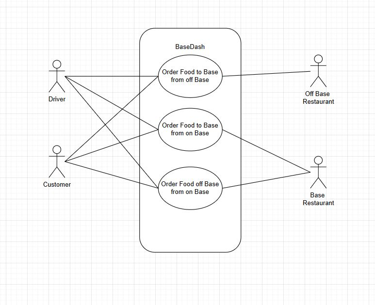

Project Description
Overview
This project aims to develop a secure and reliable food delivery application specifically designed for individuals who live or work on military bases. Traditional food delivery platforms such as DoorDash, Uber Eats, and Grubhub do not adequately address the unique access restrictions associated with military installations. As a result, drivers without proper base clearance are often unable to complete deliveries, creating inconvenience for residents and operational inefficiencies for vendors.
Our application provides a streamlined solution by ensuring that all participating drivers are properly vetted and authorized to access military bases before they are permitted to accept delivery requests. The platform integrates a verification system that confirms driver credentials, base access eligibility, and compliance with installation-specific requirements.
Context and Scope
Food delivery services have become an essential part of daily life, offering convenience and accessibility to consumers across the country. Major platforms such as DoorDash, Uber Eats, and Grubhub dominate the market by connecting customers with local restaurants through on-demand driver networks. However, these platforms are primarily designed for unrestricted civilian environments and do not account for the strict access control policies enforced on U.S. military installations.
The scope of this project includes the design, development, and implementation of a secure food delivery platform. Out of Scope for this project is Direct modification of military security policies or base access procedures, Physical security infrastructure or gate system integration, and Expansion beyond military base communities during the initial development phase.
Requirements
High-level Requirements
- End-to-End Food Ordering and Delivery Management
- Secure Driver Authorization System
Low-level Requirements
- Inventory Tracking for Partnered Restaurants
- Role-Based Access Control
Diagrams
Sequence Diagram(s)
Placeholder
Data Flow Diagram(s)
Placeholder
Use Case Diagram

Technologies
- Frontend: React Native
- Backend: TypeScript
- Database: Postgres
- Deployment: Placeholder
Database Design
Placeholder